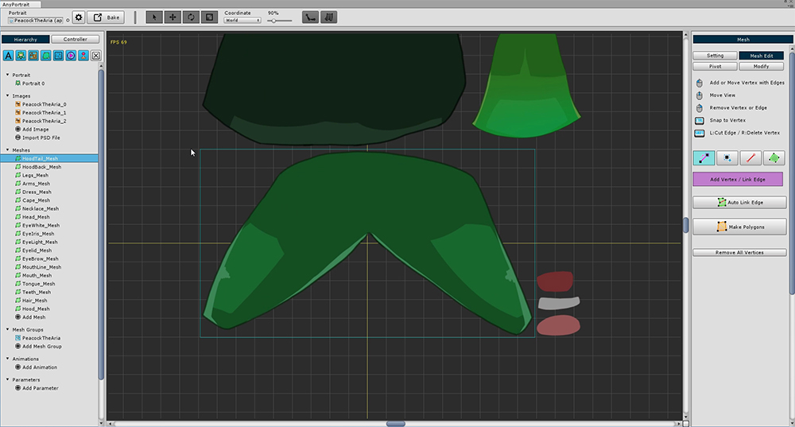

AnyPortrait > Getting Started > 2.2. Edit meshes for Bone Animation
2.2. Edit meshes for Bone Animation
1.0.0

It is very convenient to automatically create mesh and mesh groups when you open a PSD file to create a mesh group,
When you open the mesh, you can see it consists of a simple square mesh.
This is all it takes to simply move the image fragment like a "puppet",
in this tutorial, you need to refine the mesh for this animation.

To delete the square mesh and add vertices (1) Enter the "Mesh Edit" menu.
(2) Click the Remove All Vertices button to delete all vertices.

Once you remove the vertex, you will see a light blue square that was not seen before.
This rectangle represents the size of the layer image.
If you create a vertex within this area, you can create it without affecting the image area of another layer.
(It does not matter if you need to go a little longer, but be careful.)

Generate vertices more densely at the part animated by the bones.
The more vertices are placed on the folded part by the bone, the smoother the animation appears.

In this tutorial, the meshes to which the Bone animation is applied.
Let's make it by referring to the features of the upper mesh.
- Eye-shaped meshes are not animated in this tutorial, so you can skip them.
- Make meshes taking into account the appearance of joints such as arms, legs, and body.